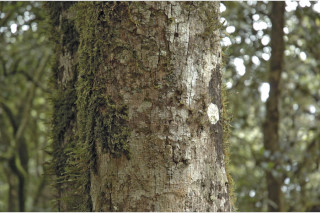

Images :



| Habit : | Small trees up to 15 m tall. |
| Leaves : | Leaves simple , alternate , spiral ; petiole 0.7-1.5 cm, slightly canaliculate , pubescent when young; lamina 4-11 x 1.5-5 cm, elliptic , apex acute to obtuse , base cuneate , margin undulate and revolute , thinly coriaceous , glabrous ; midrib thinly raised above;. |
| Inflorescence / Flower : | N/A |
| Fruit and Seed : | N/A |